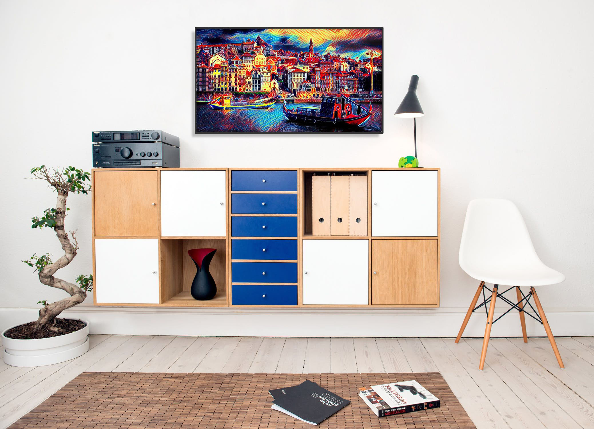
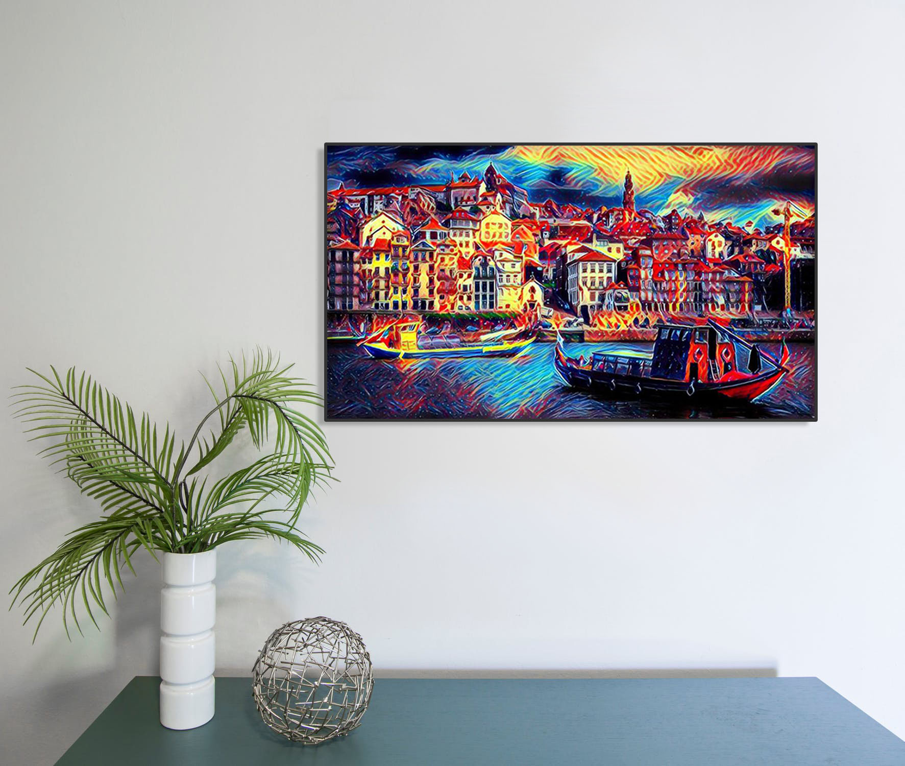
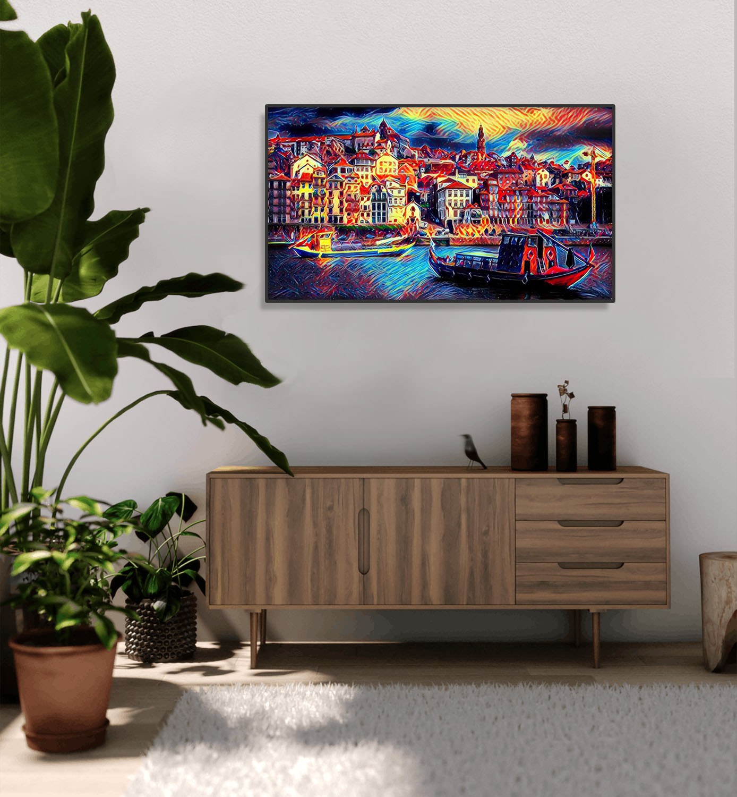
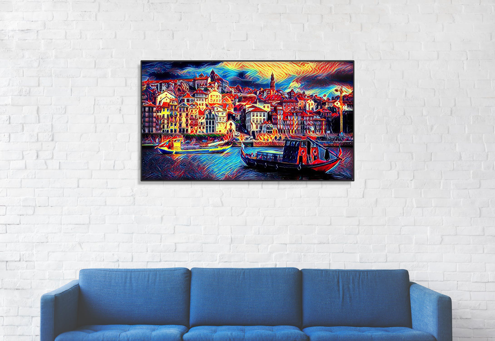

Eccentric Credence
This ai art is signed by Art Supreme. It is made on canvas and it comes with the original Certificate of Authenticity.
This work is a unique, representational wrap of possibilities that reflect viewers’ own attention mechanism. It is a contrasting consequence that AI approximation of the real world representation can often bring with a dose of multi-channel bias which may or may not be the reminiscent of an unpredictable and turbulent world. rn
€320 — Contact to purchase